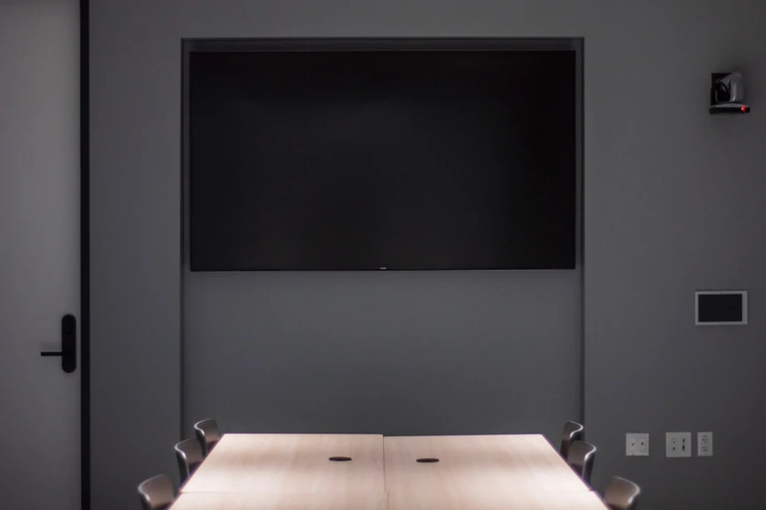

选择维念远控的四个理由
即用即走
维念远控无需登录，而且能够在浏览器中运行。这意味着您可以在任何装有现代浏览器的计算机上远程控制您的机器，或者是分享你的屏幕给他人。
点对点
维念远控采用点对点（P2P）传输技术，自动选择网络线路传输。您的计算机画面和操作都不会经过我们的服务器，这样不仅能够降低延迟，还能保护隐私。
多人观看
维念远控支持多人同时观看一个机器的屏幕（前提是分享端的网络带宽足够大），这是传统远控软件无法做到的。得益于此特性，你可以玩出更多花样。
安全保障
您与我们的信令服务器之间的通信均采用非对称加密，确保连接代号、验证码等数据安全未篡改，极大程度上避免了黑客通过远控操作机器的行为。
适用场景
远程办公
完成一些只有在公司电脑才能完成的事情，而无关你的位置。
共享会员
只需一人拥有会员账号，就能叫上三五好友一起看番。
Demo 演示
快速给甲方远程演示 Demo，而不需要提前做任何准备。
无线投屏
授课或开会中，将自己的屏幕投放到大屏（希沃）而无需线材。
选择适合你的版本
| 网页版 | uTools 插件版 | 桌面版 | |
|---|---|---|---|
| 分享屏幕给他人 | 是 | 是 | 是 |
| 自定义分享区域 | 是 | 否 | 否 |
| 控制端能进行的操作 | 无 | 限制 | 完全 |
| 多人同时观看 | 是 | 是 | 是 |
| 观看他人的机器 | 是 | 是 | 是 |
| 控制他人的机器 | 无他人控制时 | 无他人控制时 | 无他人控制时 |
| 显示实时帧率 | 否 | 否 | 是 |
| 跨平台支持 | 是 | 是 | 仅 Windows |
| 指定使用的显卡 | 否 | 否 | 是 |
| 安装大小 | 无 | 不到 1 MB | 99 MB |
| 广告 | 可能包含 | 无 | 无 |
我们希望能成为你的工作流的一部分！
版权所有 © 2022 维念软件。保留所有权利。